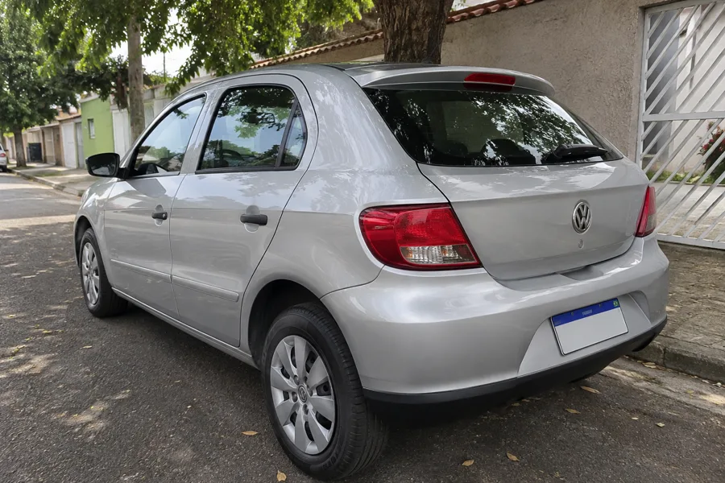
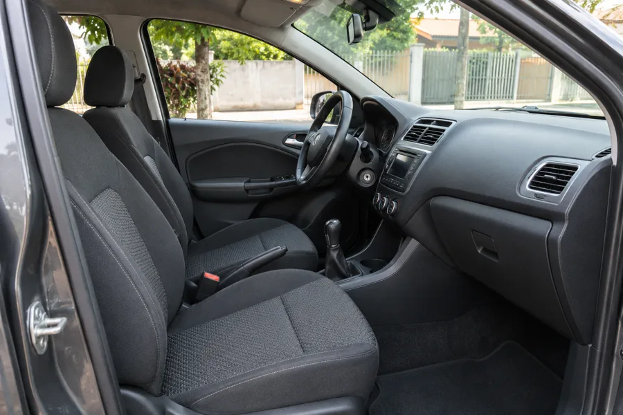

Conte sobre o carro
Alinhamos modelo, estado de conservação, fotos e o valor que você pretende receber.
Cuidamos do anúncio, das conversas e das visitas. Você escolhe a proposta e recebe direto do comprador.
Sem taxa inicial. Comissão de 5% só se a venda acontecer pela assessoria.
Quero vender meu carroO que você precisa saber antes de anunciar.
Conversamos sobre o carro, alinhamos o preço com você e combinamos a divulgação. Apresentamos as propostas para sua decisão.
A conversa inicial e a entrada na assessoria são gratuitas. Você paga a comissão somente se vender pela nossa intermediação.
O comprador paga diretamente ao proprietário. As condições da comissão são combinadas por escrito antes da divulgação.
A Via Clara é uma iniciativa da Ruon. O atendimento é feito no WhatsApp da empresa e a mensagem inicial identifica a Via Clara.
Alinhamos modelo, estado de conservação, fotos e o valor que você pretende receber.
Organizamos o anúncio, conversamos com os interessados e combinamos as visitas com você.
Você aprova a oferta e combina o pagamento direto. Acompanhamos os próximos passos da negociação.
Simule a comissão de 5% sobre o valor final da venda. O exemplo considera apenas a assessoria.
Comissão de 5% R$ 3.000,00
Você recebe R$ 57.000,00
Com boas fotos e um histórico claro, o comprador consegue avaliar o carro antes de marcar uma visita.

Fotografe frente, traseira e laterais à luz do dia. Inclua um detalhe de cada marca de uso que o comprador vai encontrar na visita.

Separe ano, versão, quilometragem e informações sobre as últimas revisões. Fotos do painel e dos bancos ajudam a mostrar o estado de conservação.
Se quiser, inclua o modelo e o ano para começar a conversa com a equipe da Ruon.
Você revisa a mensagem no WhatsApp antes de enviar.
Conversar pelo WhatsApp